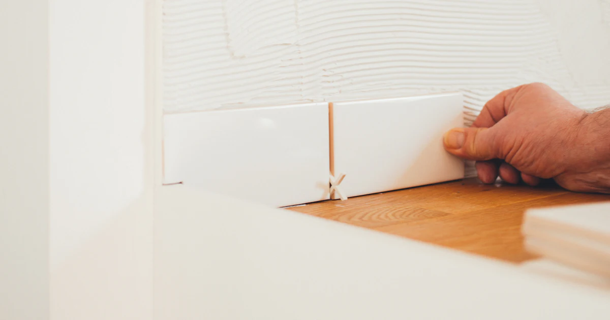

Old grout makes a bathroom look tired. The real question is whether the problem stops at the grout lines or goes deeper into the tiles, the adhesive or the waterproofing underneath. Getting that right decides whether you spend a day on a refresh or need a proper renovation.
Signs the grout has failed
Grout is the filler between tiles. It is porous unless sealed, and in a busy shower it takes a lot of water, soap and cleaning chemicals. Common signs it needs attention:
- Dark lines that stay dark after scrubbing, usually mould or dirt soaked into the grout
- Fine cracks along the joints, especially around the shower tray or bath edge
- Grout that crumbles or washes out when you run a fingernail along it
- Gaps where the grout has dropped below the tile edge
- Discoloured grout in the kitchen behind the sink or hob
If the tiles themselves are firm, flat and uncracked, regrouting is usually enough. The old grout is raked out to a reasonable depth, the joints are cleaned, new grout is packed in and the surface is sealed once cured.
Signs the problem is deeper than grout
Some symptoms point past the grout to the tiles or the layers under them. These are signs that regrouting alone will not last:
- Hollow tiles. Tap tiles gently with a coin or the handle of a screwdriver. A dull, hollow sound means the tile has lost its bond with the adhesive or wall behind it.
- Loose or rocking tiles. If a floor tile moves when you step on it, the bed under it has failed.
- Cracked tiles that are not just a chip from a dropped object, especially if cracks run across several tiles in a line.
- Damp patches outside the bathroom, such as stains on the corridor wall, swelling skirting, or a leak reported by the flat below.
- Bubbling paint or mould on the ceiling below a first floor bathroom in a villa.
- A musty smell that comes back soon after cleaning.
Leaks that show up outside the wet area often mean water is getting through the waterproofing membrane or a pipe joint. Our guide to signs of a water leak in your apartment covers how to narrow this down before opening up any walls.
Hollow tiles: repair or replace
A small number of hollow tiles in a dry area of the wall can sometimes be left alone if they are not cracked or loose. In a shower or on a floor they are a weak point. Water can collect behind them, and a hollow floor tile can crack under weight.
The usual fix is to carefully remove the affected tiles, clean off the old adhesive, and reset them with fresh adhesive. This works well if you kept spare tiles. If you do not, matching an older tile can be difficult, and you may decide to retile a whole wall or the full floor so the finish stays consistent.
When many tiles across a room sound hollow, it usually means the original installation had poor adhesive coverage. Patching becomes a cycle, and retiling is the better long term option.
Epoxy grout vs cement grout
Most homes in Dubai have cement based grout. It is affordable, easy to work with and comes in many colours. Its weakness is that it absorbs water and stains unless it is sealed and resealed.
Epoxy grout is a two part resin. It is much more resistant to water, stains and chemicals, which makes it a good choice for:
- Shower floors and walls
- Kitchen backsplashes behind the hob
- Areas cleaned often with strong products
- Light coloured grout that you want to stay light
Epoxy is harder to apply and sets quickly, so it needs an experienced installer. Badly applied epoxy can leave a haze on the tiles that is difficult to remove. For dry areas such as a living room floor, cement grout is usually fine.
Sealing and keeping grout clean
If you choose cement grout, sealing makes a big difference. A penetrating sealer is applied once the grout has fully cured, and reapplied periodically depending on use. You can test it by dropping water on the grout line: if it darkens quickly, it is time to reseal.
Simple habits help grout last longer:
- Run the bathroom extractor fan during and after showers
- Squeegee shower walls after use
- Avoid acidic or bleach heavy cleaners on cement grout
- Replace failed silicone at the corners and around the tray, since silicone and grout do different jobs
Silicone, not grout, should be used where walls meet the floor, at internal corners and around baths and trays. These joints move slightly, and rigid grout cracks there.
When to call a contractor
Call a professional if you find hollow or loose tiles, signs of a leak outside the wet area, or if you are planning a larger change. Retiling a shower properly includes checking or redoing the waterproofing, which is not a DIY step. If you are thinking about a full refresh, read our guide to planning a bathroom renovation in Dubai first. Zaman Technical Services handles floor and wall tiling work, from regrouting to full bathroom retiling.